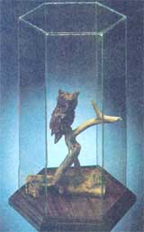
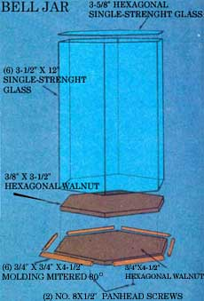

Protect your handicrafts, with...
All too often, family heirlooms-those priceless remembrances passed on by loved ones-must be tucked away out of sight to insure their safety. The curious hands of children, and even the danger of a slight slip while dusting such ornate objects, frequently make their prominent display seem risky. Well, the glass and walnut case you see in the accompanying photo is an answer -to just such a problem-that one of MOTHER's researchers worked up. It allows him to display and protect the immaculately detailed and exceedingly fragile wood carvings done by his father.
Emerson Smyers's "bell jar" (as he calls it) lets him secure his treasures beneath a protective covering of glass, and is, itself, an attractive room appointment. Few materials are required to build it, and-once you get the hang of the easy assembly shortcuts our craftsman used-you'll find that the display case will take very little time to construct.
The secret to successful preparation of the hexagonal components of the bell jar is making a very accurate template. Use a section of thin scrap lumber (1/2" plywood is excellent), and draw a 3-1/2"-radius circle, using a compass, on the face of the wood. Next, set the pin of the tool at any point on the circle, and mark the place where an arc of the same 3-1/2" radius cuts the previously drawn "hoop" (remember, hexagons are composed of six equilateral triangles). Then move the compass's pin to the penciled intersection and repeat the procedure. By continuing on around the circle in this fashion, you'll scribe the six points of a hexagon. And, when you connect the dots, you'll have a pencil outline to help you cut out the sixsided template.
To produce accurately sized glass segments to form the sides of the hexagonal tower, lay a 12" X 24" sheet of single-strength glass on your worktable, and mark off a 3-1/2" section (parallel with the 12" dimension), using a marking gauge. Then, with a glass cutter, trim off the 3-1/2" X 12" piece. Mark the next 3-1/2 "wide glass plate by aligning the marking gauge with the new edge. If you observe this procedure while producing all six sides, you'll be sure to get equal pieces.
The hexagonal top plate is slightly more difficult to prepare than are the other components, but the scrap wood template will come in handy for etching the shape onto the glass sheet. Since the transparent hex must rest atop the six sides of the jar, It needs to be the thickness of a sheet of single-pane glass larger (1/8"), all around, than is the template. You can be sure of producing a piece with correct dimensions by making your cuts on lines 1/8 inch beyond the borders of the template.
Now set the six vertical glass sheets side by side on your table, and connect them with clear adhesive tape. (The tape will serve as hinges for the panels when you attempt to form them around the scrap wood hex.) Fit the tower to the template, with the five tape joints facing in, and tape the final joint from the outside. Then fill in the gaps between each pair of panes with a small seam of silicone sealant ... and lay a thin bead of the clear caulk on the upper lip of the tower before setting the hexagonal top glass piece into place. (Don't remove the tape until the silicone sealant is dry.)
Use a top-grade hardwood to prepare the base of the bell jar . . . our woodworker chose walnut, but oak or cherry would also be appropriate. The inner 3/8"-thick hexagonal base piece should be cut out using the scrap wood as a form ... to insure that it will closely fit the glass tower. On the other hand, the larger 3/8"-thick bottom doesn't need to be sized with as much precision. The example shown in the photo happens to be formed from a circle with a 4-1/2" radius, but the piece could be slightly larger without creating problems.
Molding, prepared from 3/4" walnut, was used to close in the glass sides on our display case. While Emerson made his own trim on a shaper table, it's also possible to use commercial molding. (MOTHER's own router/shaper table was detailed in MOTHER NO. 61, page 160. See page 148 for back issue ordering information.) At any rate, the wood must be cut with a miter box so it'll fit around the tower. Set the miter angle at 30° and trim out six pieces that are 3-5/8" long on the inside. The resulting outside dimension should be about 4-1/2" for each section.
Sand and finish the wood before you assemble the base, and then glue and screw the two 3/8"-thick hexagons together (be sure the smaller one is exactly centered on the larger, by countersinking No. 8 X 1/2" screws from the bottom. When that's done, set the glass onto the base, and glue the molding around it. To complete the construction procedure (and to give, yourself a few moments for contemplation), trim away any excess caulk with a razor blade.
If you decide to produce numbers of the units, you'll no doubt be able to streamline the construction process by making up batches of each component and assembling several bell jars at once. In any event, we think you'll find that these unique display cases will look great on your mantel ... or on those of your satisfied customers!
|
 Staff Photo |
 |
|